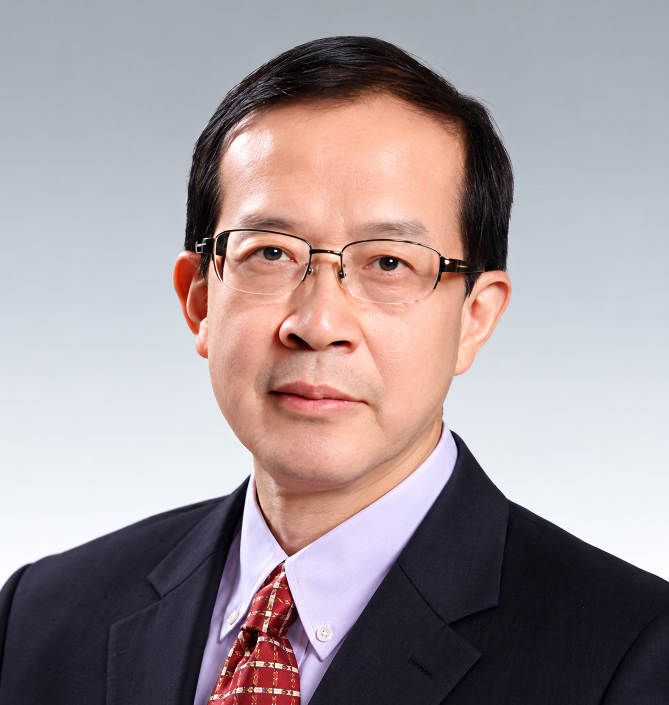
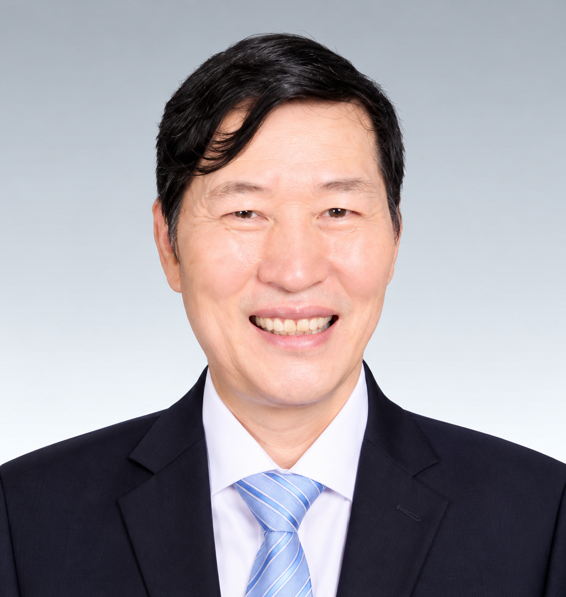
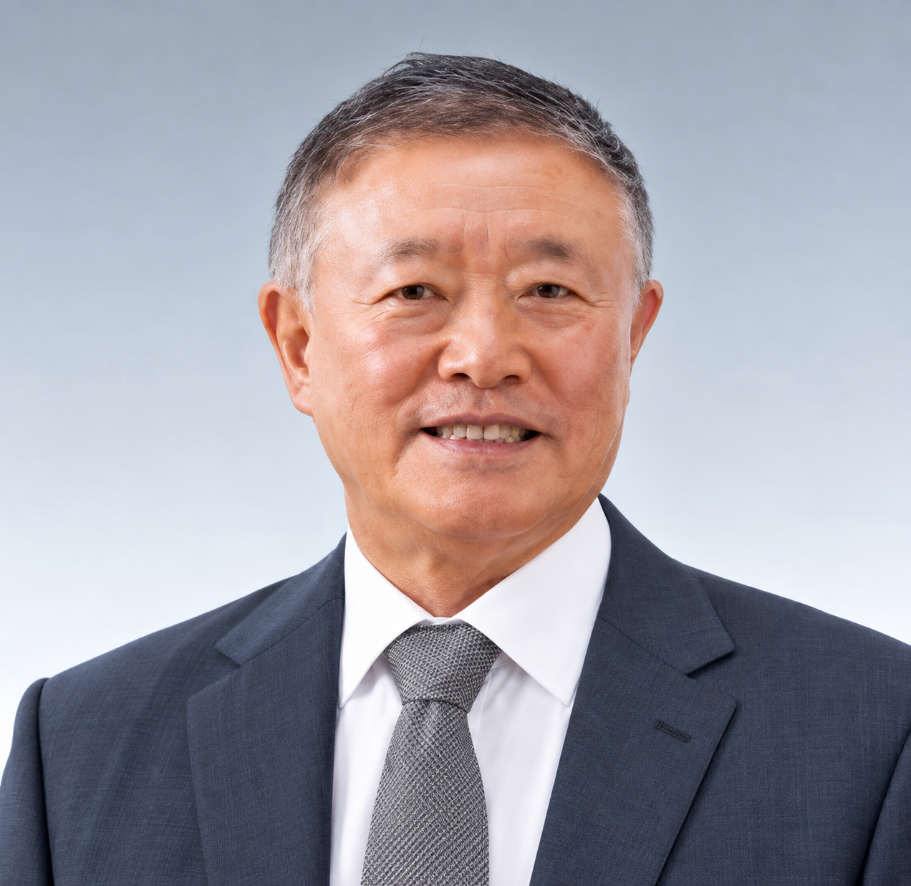
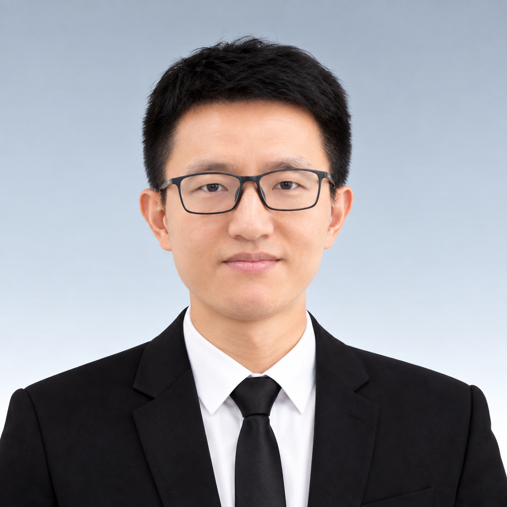
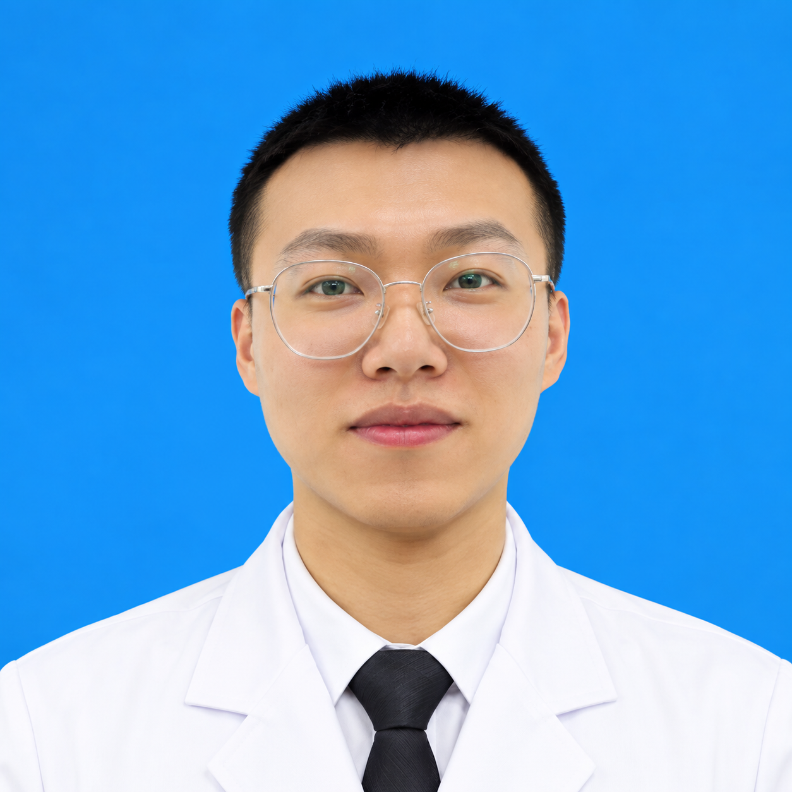
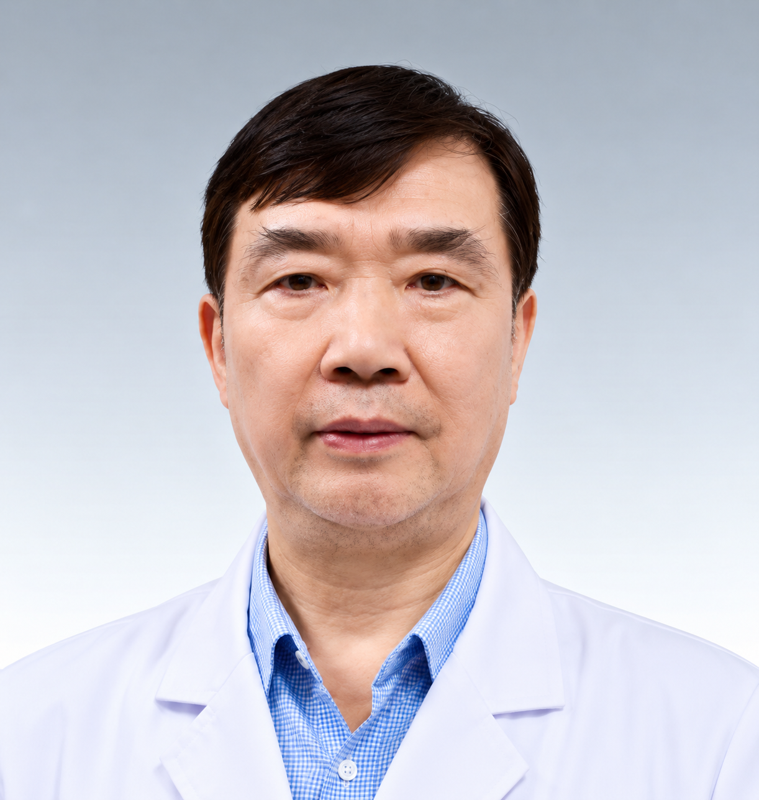

◉
Stem Cell Research
Research expertise involving stem cells, MSC quality standards and related scientific work.
Explore the scientific expertise already presented in our partner material across stem-cell research, regenerative medicine, biomedical engineering, transplantation research and related preclinical work.
The existing website material presents Huayan Regenerative Medicine Group scientists and technical experts working across stem-cell research, regenerative medicine, biomedical engineering, transplantation research and related preclinical work.
Explore the center’s scientific capabilities, specialist research areas and technical team in a clear, professional presentation.
Meet Our ExpertsResearch expertise involving stem cells, MSC quality standards and related scientific work.
Scientific work focused on regenerative-medicine research and its development.
Technical expertise supporting biomedical and preclinical research programs.
Research spanning transplantation, immune tolerance and related scientific fields.
Profiles below are retained from the website's supplied partner material.

Existing partner profile highlights MSC quality standards, RNAi, stem-cell research and regenerative medicine.

Existing partner profile highlights CAR-T research and related biomedical work.

Existing profile describes transplantation and stem-cell-induced immune tolerance research.

Regenerative-medicine and biomedical research background from the existing partner profile.

Bioengineering experience and participation in research programs as presented in the supplied website material.

Additional scientific and technical profiles can be expanded here as approved center information is supplied.
Contact our team for center information, medical coordination and the appropriate next steps.